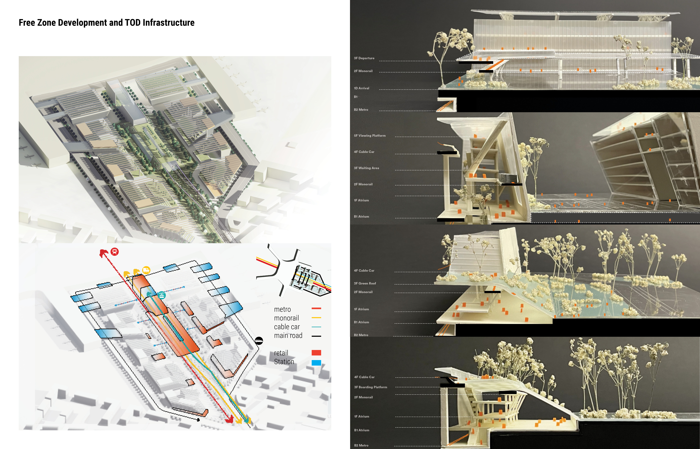
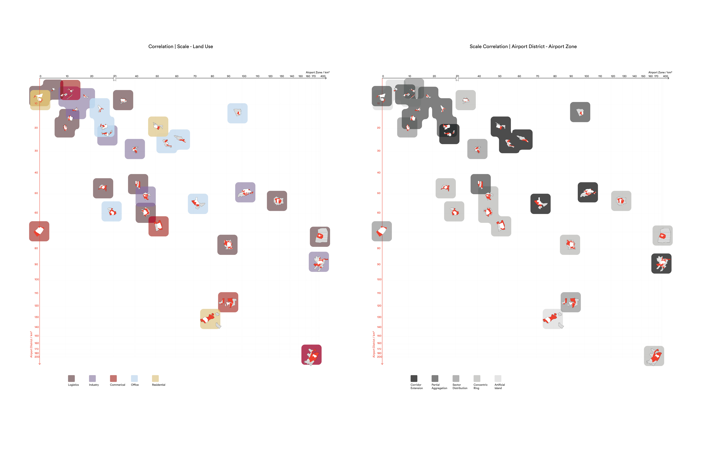

From Airport to High-Speed-Train (HST) Station: Bio Intermodality
Info
Yuxin YANG, Shuhan NIE, 02-05/2022, Academy
Instructor Joan Busquets, busquets@gsd.harvard.edu
Dingliang YANG, dyang1@gsd.harvard.edu
Institution Harvard GSD
Studio Publication Forthcoming
The studio rethinks airports in the context of environmental crisis challenges for exploring efficient intermodal transportation nodes as a new frontier for developing the future. The right combination of transportation modes can ensure the high-level accessibility that an innovative economy demands and reduce the negative impact of unnecessary long-range traveling. The programs of the development are learned from the functionality study of 36 global airports (Appendix).
Vertically Integrated Transportation System Serving the 7KM From Airport to HST
Zhengzhou is one of China's busiest logistic and low-end manufacturing cities, with dense metro and railroads. In-between the 7km from the airport to the HST station, a river serves as the critical south-to-north drinking water transfer canal, and the land is primarily undeveloped with a few villages. Bio Intermodality proposes a bio-diverse corridor extension to mingle high-tech and business development. To adapt to airport issues like noise, pollution, and height control, the master plan strategy of low-lying landscape continues in the TOD infrastructure to facilitate various transportation, interlinking of neighborhoods, and ecological continuity. Road, metro (existing), monorail, and cable cars are vertically-integrated to sustain intermodality by enhancing logistic, transfer, and travel experiences.

"Complimentary Model" of Airport and HST in Zhengzhou, China
The two models introduced for the airport districts are "complimentary" and "integrated." The integrated model refers to the airport and high-speed train (HST) station being integrated into one mega-infrastructure, creating a densified arrival experience. In contrast, the complementary model refers to the airport and HST station apart, where transfer needs to be choreographed with local development. Zhengzhou airport, China, is one exemplar case of the complementary model, with the airport 7km distant from the train station.

Bio Intermodality Development
The terminals and HST station suggest a corridor in-between. Filling business zones and high-tech campuses along, the project proposes core mix-used development zones located at overlapping functionalities and integrated with transportation systems. A landscape bio-strip interweaves the elements along the corridor.

Masterplan


APPENDIX Functionality Study of 36 Airports in the Globe
The research begins with a scope definition of an airport, airport district, and airport zone. The three scopes define, in that order, the most densely packed experience, the development area, and the larger neighborhood influenced by an airport. The research correlates the airport district's scope, land use, and spatial model to five economic development modes: transportation-oriented, financial-oriented, tech / innovation-oriented, leisure-oriented, and new industry city-oriented. Meanwhile, the spatial model depicts the potential relationship with green space as well as the centralization pattern. In this way, the research provides functionality models for boosting sustainable development in airport districts.


